Quantum Mechanics¶
From QED to Quantum Mechanics¶
The QED Lagrangian density is

Plugging this Lagrangian into the Euler-Lagrange equation of motion for a field, we get:
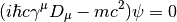

The first equation is the Dirac equation in the electromagnetic field and the second equation is a set of Maxwell equations (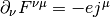) with a source 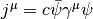, which is a 4-current comming from the Dirac equation.
The fields 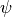 and 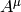 are quantized. The first approximation is that we take as a wavefunction, that is, it is a classical 4-component field. It can be shown that this corresponds to taking the tree diagrams in the perturbation theory.
We multiply the Dirac equation by 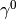 from left to get:
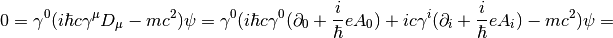

and we make the following substitutions (it’s just a formalism, nothing more): 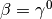, 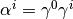, 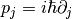, 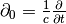 to get
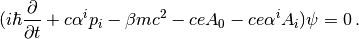
or:
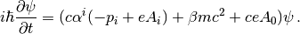
This can be written as:
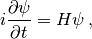
where the Hamiltonian is given by:
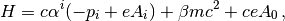
or introducing the electrostatic potential 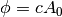 and writing the momentum as a vector (see the appendix for all the details regarding signs):
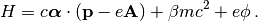
The right hand side of the Maxwell equations is the 4-current, so it’s given by:
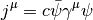
Now we make the substitution 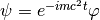, which states, that we separate the largest oscillations of the wavefunction and we get
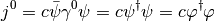
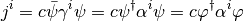
Derivation of the Pauli Equation¶
We start from the Dirac equation:
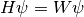
where:
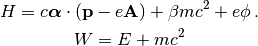
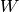 is the relativistic energy,  is the nonrelativistic energy,
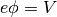 is the potential. The matrices
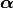 and 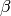 are given by:
is the nonrelativistic energy,
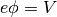 is the potential. The matrices
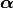 and 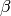 are given by:
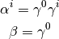
so written explicitly:
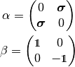
And the Dirac equation is:
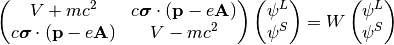
After introducing we get:
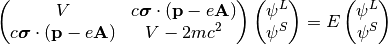
We put everything on the left hand side:
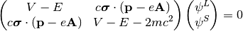
We put  next to 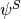:
next to 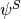:
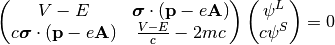
And we divide the second equation by :
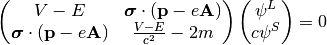
Now we express 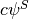 from the second equation:
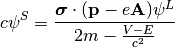
And substitute into the first equation:
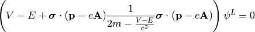
So we get the following equation (so far this is an exact equation for the first two components of the Dirac equation, no approximation has been made):
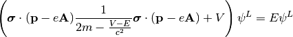
Note that the first operator (on the left hand side) acts among other
things on the  in the denominator.
By doing the nonrelativistic approximation 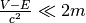 we obtain
the Pauli equation:
in the denominator.
By doing the nonrelativistic approximation 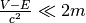 we obtain
the Pauli equation:
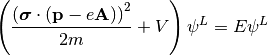
We can see, that the quantity
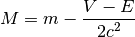
can be interpreted as relativistic mass.
Using the relations between the Pauli matrices, we can further simplify:
![\left({\boldsymbol\sigma}\cdot({\bf p}-e{\bf A})\right)^2
= \left({\bf p}-e{\bf A}\right)^2+i{\boldsymbol\sigma}
\cdot{({\bf p}-e{\bf A})\times({\bf p}-e{\bf A})} =
= \left({\bf p}-e{\bf A}\right)^2+i{\boldsymbol\sigma}
\cdot\left({\bf p}\times{\bf p}-e{\bf A}\times{\bf p}
-e{\bf p}\times{\bf A}+e^2{\bf A}\times{\bf A}\right) =
= \left({\bf p}-e{\bf A}\right)^2-ie{\boldsymbol\sigma}
\cdot\left({\bf A}\times{\bf p} +{\bf p}\times{\bf A}\right) =
= \left({\bf p}-e{\bf A}\right)^2-ie{\boldsymbol\sigma}
\cdot\left({\bf A}\times{\bf p}-{\bf A}\times{\bf p}
-i\hbar(\nabla\times{\bf A})\right) =
= \left({\bf p}-e{\bf A}\right)^2-{e\hbar}{\boldsymbol\sigma}
\cdot(\nabla\times{\bf A}) =
= \left({\bf p}-e{\bf A}\right)^2-{e\hbar}{\boldsymbol\sigma}
\cdot{\bf B}](../../_images/math/835b7062bd0b6284d42d73c575f01f5b74021259.png)
At the end, we have introduced the magnetic field 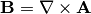. In the above, one has to be careful, because and 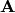 don’t commute and also the operator acts on everything on the right. We used the formula 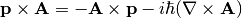, that can be proven by:
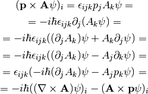
Putting this into the Pauli equation, we get:
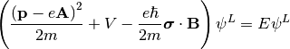
Nonrelativistic Limit in the Lagrangian¶
We use the identity 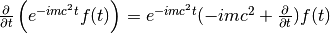 to get:
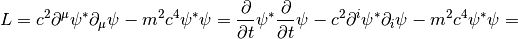
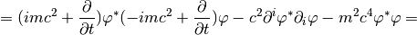
The constant factor in front of the Lagrangian is of course irrelevant, so we drop it and then we take the limit  (neglecting the last term) and we get
(neglecting the last term) and we get
After integration by parts we arrive at the Lagrangian for the Schrödinger equation:
Klein-Gordon Equation¶
The Dirac equation implies the Klein-Gordon equation:

Note however, the in the true Klein-Gordon equation is just a scalar, but here we get a 4-component spinor. Now:
We rewrite :
The nonrelativistic limit can also be applied directly to the Klein-Gordon equation:
Taking the limit we again recover the Schrödinger equation:
we rewrite the right hand side a little bit:
Using (see the appendix for details):
we get the usual form of the Schrödinger equation for the vector potential:
A little easier derivation:
and letting we get the Schrödinger equation:
Perturbation Theory¶
We want to solve the equation:
(1)
with , where is time-independent part whose eigenvalue problem has been solved:
and is a small time-dependent perturbation. form a complete basis, so we can express in this basis:
(2)
Substituting this into (1), we get:
so:
Choosing some particular state  of the Hamiltonian, we multiply the equation from the left by :
of the Hamiltonian, we multiply the equation from the left by :
where . Using :
we integrate from to  :
:
Let the initial wavefunction at time be some particular state of the unperturbed Hamiltonian, then and we get:
(3)
This is the equation that we will use for the perturbation theory.
In the zeroth order of the perturbation theory, we set and we get:
In the first order of the perturbation theory, we take the solution obtained in the zeroth order and substitute into the right hand side of (3):
In the second order, we take the last solution, substitute into the right hand side of (3) again:
And so on for higher orders of the perturbation theory — more terms will arise on the right hand side of the last formula, so this is our main formula for calculating the coefficients.
Time Independent Perturbation Theory¶
As a special case, if doesn’t depend on time, the coefficients simplify, so we calculate them in this section explicitly. Let’s take
so at the time the Hamiltonian is unperturbed and we are interested in the time  , when the Hamiltonian becomes (the coefficients will still depend on the variable) and we do the limit (this corresponds to smoothly applying the perturbation at the time negative infinity).
, when the Hamiltonian becomes (the coefficients will still depend on the variable) and we do the limit (this corresponds to smoothly applying the perturbation at the time negative infinity).
Let’s calculate :
Taking the limit :
Substituting this into (2) evaluated for :
The sum is over all , similarly for the other sum. Let’s also calculate the energy:
To evaluate this, we use the fact that and :

Where we have neglected the higher order terms, so we can identify the corrections to the energy coming from the particular orders of the perturbation theory:
Scattering Theory¶
The incoming plane wave state is a solution of
with . E.g.
We want to solve:
The solution of this is:
where
is the Green function for the Schrödinger equation. is not unique, it contains both outgoing and ingoing waves. As shown below, one can distinguish between these two by adding a small into the denominator, that moves the poles of the Green functions above and below the  -axis:
-axis:

Both and are well-defined and unique. One can calculate both Green functions explicitly:
![G_+({\bf r}, {\bf r'}) = \braket{{\bf r}|G_+|{\bf r'}}=\bra{{\bf r}}{1\over E_k-H_0+i\epsilon}\ket{{\bf r'}}=
=\int{\d^3k'\over(2\pi)^3} {\braket{{\bf r}|{\bf k'}}\braket{\bf{k'}|\bf{r'}}\over E_k-E_{k'}+i\epsilon}
=\int{\d^3k'\over(2\pi)^3} {e^{i{\bf k'}\cdot({\bf r}-{\bf r'})}\over E_k-E_{k'}+i\epsilon}
={2m\over\hbar^2}\int{\d^3k'\over(2\pi)^3} {e^{i{\bf k'}\cdot({\bf r}-{\bf r'})}\over k^2-{k'}^2+i\epsilon}=
={4\pi m\over(2\pi)^3\hbar^2i|{\bf r}-{\bf r'}|} \int_{-\infty}^\infty\d^3k' k'{e^{i k'|{\bf r}-{\bf r'}|}\over k^2-{k'}^2+i\epsilon}
={4\pi m\over(2\pi)^3\hbar^2i|{\bf r}-{\bf r'}|} (2\pi i)k{e^{i k|{\bf r}-{\bf r'}|}\over 2k}=
={me^{i k|{\bf r}-{\bf r'}|}\over2\pi\hbar^2|{\bf r}-{\bf r'}|}](../../_images/math/9b22e21ba9ee6528fbd199ef84e53ff636d467c1.png)
Similarly:
Assuming , we can taylor expand :
so:
and simplify the result even further:
Let’s get back to the solution of the Schrödinger equation:

It contains the solution on both sides of the equation, so we express it explicitly:
and multiply by :
where is the transition matrix:
Then the final solution is:
and in a coordinate representation:
Plugging the representation of the Green function for in:
![\psi({\bf r}) =e^{i{\bf k}\cdot{\bf r}} + {m\over2\pi\hbar^2}{e^{ikr}\over r} \int\d^3 r'\d^3k' e^{-i k{\bf r'}\cdot{\bf\hat r}} e^{i{\bf k'}\cdot{\bf r'}} \braket{{\bf k'}|T|{\bf k}}=
=e^{i{\bf k}\cdot{\bf r}} + {m\over2\pi\hbar^2}{e^{ikr}\over r} \int\d^3 r'\d^3k' e^{i {\bf r'}\cdot({\bf k'}-k{\bf\hat r})} \braket{{\bf k'}|T|{\bf k}}=
=e^{i{\bf k}\cdot{\bf r}} + {m\over2\pi\hbar^2}{e^{ikr}\over r} \int\d^3k' \delta({\bf k'}-k{\bf\hat r}) \braket{{\bf k'}|T|{\bf k}}=
=e^{i{\bf k}\cdot{\bf r}} + {m\over2\pi\hbar^2}{e^{ikr}\over r} \braket{k{\bf\hat r}|T|{\bf k}}=
=e^{i{\bf k}\cdot{\bf r}} + f(\theta,\phi)\, {e^{ikr}\over r}](../../_images/math/559b2f7b087b18cfea80818e0973c6ad991c023f.png)
where the scattering amplitude is:
Where is the final momentum.
The differential cross section is defined as the probability to observe the scattered particle in a given state per solid angle, e.g. the scattered flux per unit of solid angle per incident flux:
where we used and
Let’s write the explicit formula for the transition matrix:
Born Approximation¶
The Born approximation is just the first term:
We can also write it as:
where . Note that for we can write using the angle between the vectors and :
Given the  we can then calculate the
scattering potential
we can then calculate the
scattering potential  by the Fourier transform:
by the Fourier transform:
Example 1:
Example 2:
Example 3 — Yukawa potential in Born approximation:
![V(r) = -V_0 {e^{-\alpha r}\over r}
\tilde V({\bf q}) = -{4\pi V_0\over |{\bf q}|^2 + \alpha^2}
f(\theta,\phi) = {m\over2\pi\hbar^2} \braket{{\bf k'}|T|{\bf k}}
= {m\over2\pi\hbar^2} \tilde V({\bf q})
= -{m\over2\pi\hbar^2} {4\pi V_0\over |{\bf q}|^2 + \alpha^2}
= -{2m\over\hbar^2} {V_0\over |{\bf q}|^2 + \alpha^2}
{\d\sigma\over\d\Omega} = |f(\theta, \phi)|^2
= \left(2mV_0\over \hbar^2\right)^2
{1\over\left(|{\bf q}|^2 + \alpha^2\right)^2}
= \left(2mV_0\over \hbar^2\right)^2
{1\over\left(4k^2\sin^2\left(\theta\over2\right)
+ \alpha^2\right)^2}
\sigma
= \int {\d\sigma\over\d\Omega} \d\Omega
= \int {\d\sigma\over\d\Omega} \sin\theta \d \theta\d\phi
=
= \left(2mV_0\over \hbar^2\right)^2\int
{1\over\left(4k^2\sin^2\left(\theta\over2\right) + \alpha^2\right)^2}
\sin\theta \d \theta\d\phi =
= \left(2mV_0\over \hbar^2\right)^2 2\pi\int_0^\pi
{\sin\theta\d\theta\over
\left(4k^2\sin^2\left(\theta\over2\right) + \alpha^2\right)^2} =
= \left(2mV_0\over \hbar^2\right)^2 2\pi\int_0^\pi
{\sin\theta\d\theta\over
\left(2k^2(1-\cos\theta) + \alpha^2\right)^2} =
= \left(2mV_0\over \hbar^2\right)^2 2\pi\int_{-1}^1
{\d y\over \left(2k^2(1+y) + \alpha^2\right)^2} =
= \left(2mV_0\over \hbar^2\right)^2 2\pi
\int_{\alpha^2}^{4k^2+\alpha^2} {2k^2\d z\over z^2} =
= \left(2mV_0\over \hbar^2\right)^2 2\pi 2k^2
\left({1\over\alpha^2} - {1\over 4k^2 + \alpha^2}\right)](../../_images/math/6f572e11cfe38ab1ebbb3a02ac9bae1ccf424bf0.png)
Example 4 — Coulomb potential in Born approximation:

By setting we obtain the classical Rutherford cross-section formula.
Systematic Perturbation Theory in QM¶
We have
where the ground state of the noninteracting Hamiltonian is:
and the ground state of the interacting Hamiltonian is:
Then:
We can also write
where
Let’s write several common expressions for the ground state energy:
![\Delta E = E - E_0 = {\braket{0|H_1|\Omega}\over\braket{0 | \Omega}}
= {\braket{0|H_1 U(0, -\infty)|0}\over\braket{0 |U(0, -\infty)|0}}
=
= \lim_{t\to0} {\braket{0|H_1 U(t, -\infty)|0}\over
\braket{0 |U(t, -\infty)|0}}
= \lim_{t\to0} {\braket{0|i\partial_t U(t, -\infty)|0}\over
\braket{0 |U(t, -\infty)|0}}
= \lim_{t\to0} {i\partial_t\braket{0| U(t, -\infty)|0}\over
\braket{0 |U(t, -\infty)|0}}
=
= \lim_{t\to0} i\partial_t\log\braket{0| U(t, -\infty)|0}
\equiv \lim_{t\to\infty(1-i\epsilon)} i{\d\over\d t}\log
\braket{0| U(t, -\infty)|0}](../../_images/math/fb6456f6cea1109aafd3b951dbc06cafc2037a1e.png)
The last expression incorporates the dependence of explicitly. The vacuum amplitude is sometimes denoted by :
The two point (interacting) Green (or correlation) function is:

The limit of is tacitly assumed to make this formula well defined (sometimes the other way of writing the same limit is used). Another way of writing the formula above for the Green function in QM is:
Last type of similar expressions to consider is the scattering amplitude:
where the initial state is let’s say a boson+fermion and the final state a boson+antifermion:
This is just an example, the and states can contain any number of (arbitrary) particles.
Appendix¶
Units and Dimensional Analysis¶
The evolution operator is dimensionless:
So:
where  is an arbitrary mass scale. Length unit is , so then
is an arbitrary mass scale. Length unit is , so then
For the particular forms of the Lagrangians above we get:
so , and we get
Example: what is the dimension of in ? Answer:
In order to get the above units from the SI units, one has to do the following identification:

The SI units of the above quantities are:
The SI units are useful for checking that the , and constants are at correct places in the expression.
Atomic Units¶
Hartree atomic units are defined using the relations:

so for example for the Bohr radius we get:
for fine structure constant () we get:
from which we calculate the speed of light in atomic units as:
Energy is measured in Hartrees, one Hartree being
Hamiltonian and the corresponding spectrum of the Hydrogen atom:
become in atomic units:
Poisson equation (Gauss’s law)
becomes:
Tensors in Special Relativity and QFT¶
In general, the covariant and contravariant vectors and tensors work just like in special (and general) relativity. We use the metric (e.g. signature -2, but it’s possible to also use the metric with signature +2). The four potential is given by:

where is the electrostatic potential. Whenever we write , the components of it are given by the upper indices, e.g. . The components with lower indices can be calculated using the metric tensor, so it depends on the signature convention:
In our case we got and (if we used the other signature convention, then the sign of would differ and would stay the same). The length (squared) of the vector is:
where  .
.
The position 4-vector is (in any metric):
Gradient is defined as (in any metric):
the upper indices depend on the signature, e.g. for -2:
and +2:
The d’Alembert operator is:
the 4-velocity is (in any metric):
where is the proper time,
and
is the velocity in the coordinate time . In the metric
with signature +2:

With signature -2 we get . The 4-momentum is (in any metric)

where  is the rest mass. The fluid-density 4-current is (in any metric):
is the rest mass. The fluid-density 4-current is (in any metric):
where is the fluid density at rest. For example the vanishing 4-divergence (the continuity equation) is written as (in any metric):
Momentum () and energy () is combined into 4-momentum as
For the signature we get and .
For we get (signature -2):
comparing those two we get the following useful relations (valid in any metric):
the following relations are also useful:
For the signature we get:
So for example the Klein-Gordon equation:
can be for signature  written as:
written as:
and for as:
Note: for the signature +2, we would get and .
For the minimal coupling we get:
and for the lower indices:

Adding Angular Momenta¶
Angular momenta are added using the Clebsch-Gordan coefficients (or equivalently symbols):
(4)
Spin Orbit Coupling (Spin Spherical Harmonics)¶
This is just a special case of (4) for:
So the kets can be written as:
Where:
Where  is a spin, . Then we get:
is a spin, . Then we get:
![\ket{l \half j_3 m_3}
= \sum_{m=-l}^l \sum_{s=-\half}^\half
(-1)^{l-\half+m_3}\sqrt{2j_3+1}
\begin{pmatrix} l & \half & j_3 \\ m & s & -m_3 \end{pmatrix}
\ket{l m \half s}
=
= (-1)^{l-\half+m_3}\sqrt{2j_3+1}
\sum_{m=-l}^l
\left(
\begin{pmatrix} l & \half & j_3 \\ m & -\half & -m_3 \end{pmatrix}
\ket{l m \half (-\half)}\right.
+
+\left.
\begin{pmatrix} l & \half & j_3 \\ m & \half & -m_3 \end{pmatrix}
\ket{l m \half \half}\right)=
=(-1)^{l-\half+m_3}\sqrt{2j_3+1} \left(
\begin{pmatrix} l & \half & j_3 \\ m_3+\half & -\half & -m_3 \end{pmatrix}
\ket{l (m_3+\half) \half (-\half)}\right.
+
+\left.
\begin{pmatrix} l & \half & j_3 \\ m_3-\half & \half & -m_3 \end{pmatrix}
\ket{l (m_3-\half) \half \half}\right)=
=(-1)^{l-\half+m_3}\sqrt{2j_3+1} \begin{pmatrix}
\begin{pmatrix} l & \half & j_3 \\ m_3-\half & \half & -m_3 \end{pmatrix}
Y_{l, m_3-\half} \\
\begin{pmatrix} l & \half & j_3 \\ m_3+\half & -\half & -m_3 \end{pmatrix}
Y_{l, m_3+\half}
\end{pmatrix}](../../_images/math/c9b2647001bb80f7cd2cc2099eb2482dc24810e3.png)
These are called spin-angular functions or spin spherical harmonics. Using the triangle selection rule of the symbols, we can see that there are only two options for :
So we get for :
![\ket{(j_3-\half) \half j_3 m_3}
=(-1)^{j_3-\half-\half+m_3}\sqrt{2j_3+1} \begin{pmatrix}
\begin{pmatrix} j_3-\half & \half & j_3 \\ m_3-\half & \half & -m_3 \end{pmatrix}
Y_{j_3-\half, m_3-\half} \\
\begin{pmatrix} j_3-\half & \half & j_3 \\ m_3+\half & -\half & -m_3 \end{pmatrix}
Y_{j_3-\half, m_3+\half}
\end{pmatrix} =
=(-1)^{j_3+m_3-1}\sqrt{2j_3+1} \begin{pmatrix}
(-1)^{j_3+m_3-1}\sqrt{j_3+m_3\over 2 j_3 (2j_3+1)}
Y_{j_3-\half, m_3-\half} \\
(-1)^{2j_3} (-1)^{j_3-m_3-1}\sqrt{j_3-m_3\over 2 j_3 (2j_3+1)}
Y_{j_3-\half, m_3+\half}
\end{pmatrix} =
= \begin{pmatrix}
\sqrt{j_3+m_3\over 2 j_3}
Y_{j_3-\half, m_3-\half} \\
(-1)^{4j_3}\sqrt{j_3-m_3\over 2 j_3}
Y_{j_3-\half, m_3+\half}
\end{pmatrix} =
= {1\over \sqrt{2j_3}}\begin{pmatrix}
\sqrt{j_3+m_3}\, Y_{j_3-\half, m_3-\half} \\
\sqrt{j_3-m_3}\, Y_{j_3-\half, m_3+\half}
\end{pmatrix} =
= {1\over\sqrt{2l+1}}\begin{pmatrix}
\sqrt{l+m_3+\half}\, Y_{l, m_3-\half} \\
\sqrt{l-m_3+\half}\, Y_{l, m_3+\half}
\end{pmatrix}](../../_images/math/b2a9171386bc541f2b193c62032a6eaedf6f050b.png)
The allowed values for are , total of values. For the case , the spherical harmonic is not defined () but its coefficient (the square root ) is zero, so the whole element is defined as zero.
For :
![\ket{(j_3+\half) \half j_3 m_3}
=(-1)^{j_3+\half-\half+m_3}\sqrt{2j_3+1} \begin{pmatrix}
\begin{pmatrix} j_3+\half & \half & j_3 \\ m_3-\half & \half & -m_3 \end{pmatrix}
Y_{j_3+\half, m_3-\half} \\
\begin{pmatrix} j_3+\half & \half & j_3 \\ m_3+\half & -\half & -m_3 \end{pmatrix}
Y_{j_3+\half, m_3+\half}
\end{pmatrix} =
=(-1)^{j_3+m_3}\sqrt{2j_3+1} \begin{pmatrix}
(-1)^{2j_3+1}(-1)^{j_3-m_3}\sqrt{j_3-m_3+1 \over (2j_3+1)(2j_3+2)}
Y_{j_3+\half, m_3-\half} \\
(-1)^{j_3+m_3}\sqrt{j_3+m_3+1 \over (2j_3+1)(2j_3+2)}
Y_{j_3+\half, m_3+\half}
\end{pmatrix} =
= \begin{pmatrix}
(-1)^{4j_3+1}\sqrt{j_3-m_3+1 \over 2j_3+2}
Y_{j_3+\half, m_3-\half} \\
\sqrt{j_3+m_3+1 \over 2j_3+2}
Y_{j_3+\half, m_3+\half}
\end{pmatrix} =
= {1\over\sqrt{2j_3+2}}\begin{pmatrix}
-\sqrt{j_3-m_3+1}\, Y_{j_3+\half, m_3-\half} \\
\sqrt{j_3+m_3+1}\, Y_{j_3+\half, m_3+\half}
\end{pmatrix} =
= {1\over\sqrt{2l+1}}\begin{pmatrix}
-\sqrt{l-m_3+\half}\, Y_{l, m_3-\half} \\
\sqrt{l+m_3+\half}\, Y_{l, m_3+\half}
\end{pmatrix}](../../_images/math/0757fda82aebd21e877ffe5bd419a15232f42791.png)
The allowed values for are , total of values (in particular, the values are not allowed).
The last formula is the spin spherical harmonics given in terms of , the
second last formula is in terms of (both are used).
The spin spherical harmonics is usually denoted by  or . See the next section for the definition of .
or . See the next section for the definition of .
Kappa¶
In order to define the state, one needs to specify both and  (distinguishng the two cases ). This can be unified
into just one integer , where
is defined as the eigenvalue of the operator:
(distinguishng the two cases ). This can be unified
into just one integer , where
is defined as the eigenvalue of the operator:
Then:
from which

The opposite relation is:
Code:
>>> from sympy import var, S
>>> var("j l")
(j, l)
>>> k = -j*(j+1) + l*(l+1) - S(1)/4
>>> k.subs(l, j-S(1)/2).expand()
-j - 1/2
>>> k.subs(l, j+S(1)/2).expand()
j + 1/2
Some useful relations with that follow from the above for both cases :
In order to enumerate all possibilities, one needs to count all integers except zero: :
![\begin{array}{rrrrcc}
\kappa & l & j_3 & j_3 - l & \mbox{degeneracy} & \mbox{label} \\
\hline
-1 & 0 & 0.5 & 0.5 & 2 & s_{1/2} \\
1 & 1 & 0.5 & -0.5 & 2 & p_{1/2} \\
-2 & 1 & 1.5 & 0.5 & 4 & p_{3/2} \\
2 & 2 & 1.5 & -0.5 & 4 & d_{3/2} \\
-3 & 2 & 2.5 & 0.5 & 6 & d_{5/2} \\
3 & 3 & 2.5 & -0.5 & 6 & f_{5/2} \\
-4 & 3 & 3.5 & 0.5 & 8 & f_{7/2} \\
4 & 4 & 3.5 & -0.5 & 8 & g_{7/2} \\
-5 & 4 & 4.5 & 0.5 & 10 & g_{9/2} \\
5 & 5 & 4.5 & -0.5 & 10 & h_{9/2} \\
-6 & 5 & 5.5 & 0.5 & 12 & h_{11/2} \\
6 & 6 & 5.5 & -0.5 & 12 & i_{11/2} \\
\cdots & & & \\
\end{array}](../../_images/math/2cb3ad0ecc2129ceff7360838c6c01780ca12d1b.png)
The degeneracy of the individual states for each
is equal to (which is equal to for
and for , see the previous section), that is 2, 4, 6, 8 for
(or equivalently )
respectively. All states together with the given have total degeneracy
, that is 2, 6, 10, 14 for respectively.
The states are labeled by a letter corresponding to (s, p, d, f, g, h, i, j, k, l, m, n, o, q, r, t, u, v, w, x, y, z, a, b, c, e, F, G, H, I, J, K, L, M, N, O, P, Q, R, S, T, U, V, W, X, Y, Z, A, B, C, D, E) with a subscript equal to the total angular momentum with .